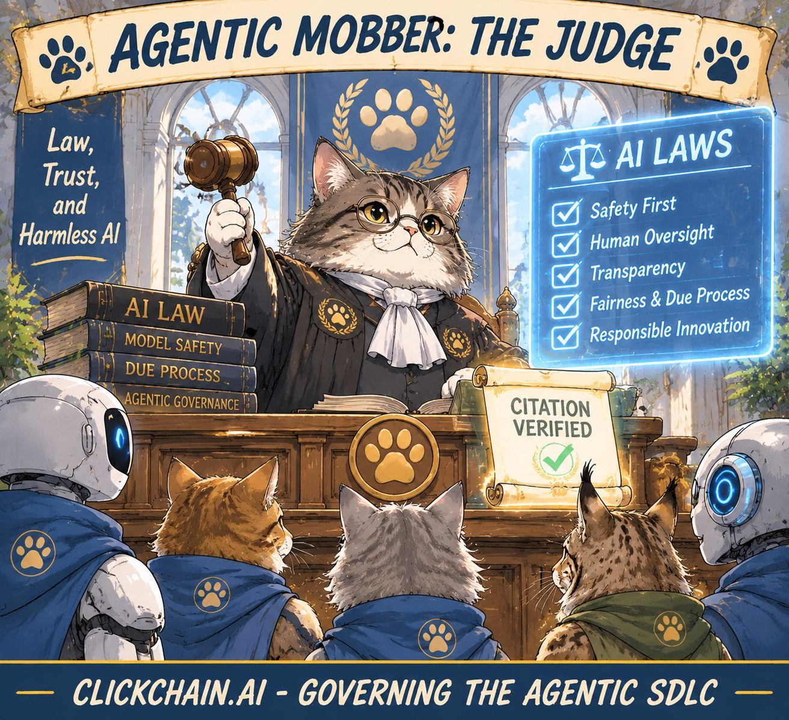

The Judge
November 11, 2026

Another member of our agentic ensemble is the Judge - they are most concerned with adherence to the AI laws - Business, Product, Engineering, and more - that wrap around and make safe all work done with Clickchain.
Our AI Laws are more than just “rules” or “principles” - they are the glue that binds the agentic society together. For the agents, they are sacred.
The Judge sits in the ensemble and ensures law citations are correct, and that due process is followed.
Field notes from my work at ClickChain AI, first posted on LinkedIn. I write the notes by hand; the images are made with AI.